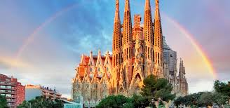
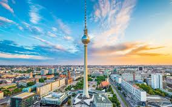
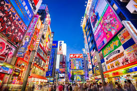

Banja Luka - Pariz(411KM)
Grad svjetlosti, romantike i umjetnosti. Šetnja pored Sene,
pogled sa Ajfelove kule i večera u malom bistrou ostaju zauvjek urezani u sjećanju.

Sarajevo - Barcelona(389KM)
More, Gaudijeva arhitektura i neprekidna energija. Barselona spaja umjetnost,
istoriju i opušteni mediteranski duh u savršenom ritmu.

Sarajevo - New York(1099KM)
Grad koji nikada ne spava. Od Central Parka do Times Square-a, sve je moguće
u Velikoj Jabuci – ovde se svijet susreće na svakom ćošku.

Tuzla - Berlin(179KM)
Mjesto gdje se prošlost i budućnost sreću. Dinamičan, kreativan i pun kontrasta – Berlin priča
priče zidova, klubova i umjetnosti.

Banja Luka - Tokio(947KM)
Futurizam i tradicija ruku pod ruku. Grad svjetla, neonskih ulica, tišine hramova i savršeno
organizovanog haosa koji osvaja sva čula.